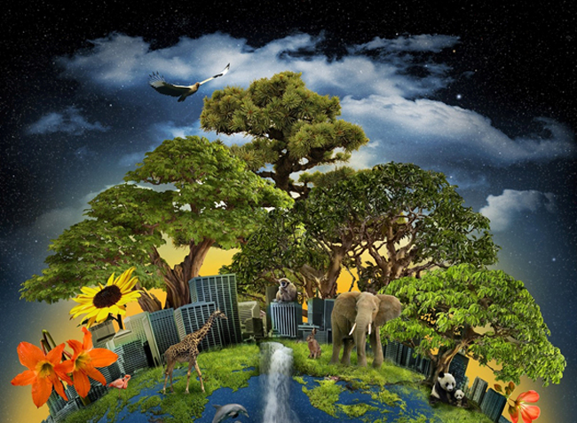

La naturaleza es la fuente de toda la vida en la Tierra. Desde los bosques tropicales hasta las tundras árticas, hay una variedad increíble de paisajes y hábitats que albergan una gran diversidad de especies animales y vegetales. La conservación de estos ecosistemas es crucial para mantener la biodiversidad y asegurar un futuro sostenible para nuestro planeta.
La biodiversidad es la variedad de vida en la Tierra, y es esencial para mantener los procesos naturales que sustentan la vida en nuestro planeta. La conservación de la biodiversidad implica proteger los hábitats naturales y reducir la amenaza de las especies invasoras, la contaminación y el cambio climático. Los científicos han advertido que estamos en medio de una sexta extinción masiva de especies, y que la pérdida de la biodiversidad es una amenaza seria para la supervivencia humana a largo plazo.
La educación y la conciencia son fundamentales para crear una cultura de conservación de la biodiversidad. A través de la educación, podemos aumentar la comprensión de la importancia de la biodiversidad y la necesidad de conservarla. La conciencia puede ser fomentada a través de campañas de información, eventos y programas de voluntariado.
La biodiversidad es un recurso invaluable que debemos proteger y conservar para asegurar un futuro sostenible para nuestro planeta. Todos podemos hacer nuestra parte para proteger la biodiversidad y promover un futuro sostenible para todos.
La biodiversidad es la columna vertebral de los ecosistemas, y su pérdida podría llevar a un colapso generalizado de la vida en la Tierra.- Edward O. Wilson
Para más información sobre la biodiversidad y la conservación, visita biodiversidad.gob.mx
La siguiente imagen muestra la diversidad de vida en la Tierra:
Recuerda: LA BIODIVERSIDAD ES UN RECURSO INVALUABLE PARA NUESTRO PLANETA.